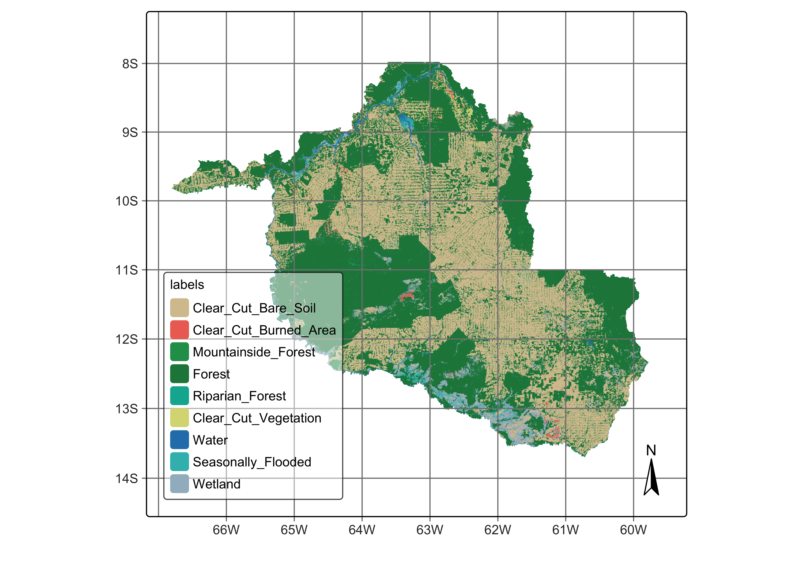

24 Map accuracy assessment
Configurations to run this chapter
# load "pysits" library
from pysits import *
from pathlib import Path
# set tempdir if it does not exist
tempdir_py = Path.home() / "sitsbook/tempdir/Python/val_map"
tempdir_py.mkdir(parents=True, exist_ok=True)24.1 Introduction
Statistically robust and transparent approaches for assessing accuracy are essential parts of the land classification process. The sits package supports the good practice recommendations for designing and implementing an accuracy assessment of a change map and estimating the area based on reference sample data. These recommendations address three components: sampling design, reference data collection, and accuracy estimates [1].
Crucially, Olofsson et al. argue that area estimation should be based on the reference data, not solely on the classified map. This is because map-derived area estimates are often biased due to classification errors. By weighting the confusion matrix according to the sampling design, one can produce unbiased estimates of the area occupied by each land cover class, along with corresponding standard errors and confidence intervals. This correction is particularly important in studies where accurate area estimation informs policy or decision-making processes.
24.2 Example data set
Our study area is the state of Rondonia (RO) in the Brazilian Amazon, which has a total area of . According to official Brazilian government statistics, as of 2021, there are of tropical forests in RO, which corresponds to 53% of the state’s total area. Significant human occupation started in 1970, led by settlement projects promoted by then Brazil’s military government [2]. Small and large-scale cattle ranching occupies most deforested areas. Deforestation in Rondonia is highly fragmented, partly due to the original occupation by small settlers. Such fragmentation poses considerable challenges for automated methods to distinguish between clear-cut and highly degraded areas. While visual interpreters rely upon experience and field knowledge, researchers must carefully train automated methods to achieve the same distinction.
We used Sentinel-2 and Sentinel-2A ARD (analysis ready) images from 2022-01-01 to 2022-12-31. Using all 10 spectral bands, we produced a regular data cube with a 16-day interval, with 23 instances per year. The best pixels for each period were selected to obtain as low cloud cover as possible. Persistent cloud cover pixels remaining in each period are then temporally interpolated to obtain estimated values. As a result, each pixel is associated with a valid time series. To fully cover RO, we used 41 MGRS tiles; the final data cube has 1.1 TB.
The work considered nine LUCC classes: (a) stable natural land cover, including Forest and Water; (b) events associated with clear-cuts, including Clear_Cut_Vegetation, Clear_Cut_Bare_Soil, and Clear_Cut_Burned_Area; (c) natural areas with seasonal variability, Wetland, Seasonally_Flooded_Forest, and Riparian_Forest; (d) stable forest areas subject to topographic effects, including Mountainside_Forest.
In this chapter, we will take the classification map as our starting point for accuracy assessment. This map can be retrieved from the sitsdata package as follows.
Load probabilities cube
# define the classes of the probability cube
labels <- c("1" = "Clear_Cut_Bare_Soil",
"2" = "Clear_Cut_Burned_Area",
"3" = "Mountainside_Forest",
"4" = "Forest",
"5" = "Riparian_Forest",
"6" = "Clear_Cut_Vegetation",
"7" = "Water",
"8" = "Seasonally_Flooded",
"9" = "Wetland")
# directory where the data is stored
data_dir <- system.file("extdata/Rondonia-Class-2022-Mosaic/", package = "sitsdata")
# create a probability data cube from a file
rondonia_2022_class <- sits_cube(
source = "MPC",
collection = "SENTINEL-2-L2A",
data_dir = data_dir,
bands = "class",
labels = labels,
version = "mosaic"
)# define the classes of the probability cube
labels = {"1" : "Clear_Cut_Bare_Soil",
"2" : "Clear_Cut_Burned_Area",
"3" : "Mountainside_Forest",
"4" : "Forest",
"5" : "Riparian_Forest",
"6" : "Clear_Cut_Vegetation",
"7" : "Water",
"8" : "Seasonally_Flooded",
"9" : "Wetland"}
# directory where the data is stored
data_dir = r_package_dir("extdata/Rondonia-Class-2022-Mosaic/", package = "sitsdata")
# create a probability data cube from a file
rondonia_2022_class = sits_cube(
source = "MPC",
collection = "SENTINEL-2-L2A",
data_dir = data_dir,
bands = "class",
labels = labels,
version = "mosaic"
)Plot cube
# plot the classification map
plot(rondonia_2022_class)# plot the classification map
plot(rondonia_2022_class)
24.3 Sampling design
A key recommendation is the use of probability-based sampling designs—such as stratified random sampling—for the selection of reference data. This approach guarantees that each sample unit has a known, non-zero probability of selection, enabling the derivation of statistically valid and unbiased estimates. Moreover, stratified sampling is particularly effective in improving the precision of area estimates, especially when class distributions are imbalanced.
The reference data used for validation must be collected independently of the classification process and should be carefully labeled according to a set of clear, mutually exclusive, and exhaustive class definitions. These definitions must be consistently applied across both map labels and reference labels to avoid ambiguities during comparison.
Sampling designs use established statistical methods aimed at providing unbiased estimates. Based on a chosen design, sits supports a selection of random samples per class. These samples should be evaluated accurately using high-quality reference data, ideally collected through field visits or using high-resolution imagery. In this way, we get a reference classification that is more accurate than the map classification being evaluated.
Following the recommended best practices for estimating accuracy of LUCC maps [1], sits uses Cochran’s method for stratified random sampling [3]. The method divides the population into homogeneous subgroups, or strata, and then applying random sampling within each stratum. In the case of LUCC, we take the classification map as the basis for the stratification. The area occupied by each class is considered as an homogeneous subgroup. Cochran’s method for stratified random sampling helps to increase the precision of the estimates by reducing the overall variance, particularly when there is significant variability between strata but relatively less variability within each stratum.
To determine the overall number of samples to measure accuracy, we use the following formula [3]:
\[ n = \left( \frac{\sum_{i=1}^L W_i S_i}{S(\hat{O})} \right)^2 \] where
- \(L\) is the number of classes
- \(S(\hat{O})\) is the expected standard error of the accuracy estimate, expressed as a proportion
- \(S_i\) is the standard deviation of stratum \(i\)
- \(W_i\) is is the mapped proportion of area of class \(i\)
The standard deviation per class (stratum) is estimated based on the expected user’s accuracy \(U_i\) for each class as
\[ S_i = \sqrt{U_i(1 - U_i)} \]
Therefore, the total number of samples depends on the assumptions about the user’s accuracies \(U_i\) and the expected standard error \(S(\hat{O})\). Once the sample size is estimated, there are several methods for allocating samples per class [1]. One option is proportional allocation, when sample size in each stratum is proportional to the stratum’s size in the population. In land use mapping, some classes often have small areas compared to the more frequent ones. Using proportional allocation, rare classes will have small sample sizes decreasing their accuracy. Another option is equal allocation, where all classes will have the same number of samples; however, equal allocation may fail to capture the natural variation of classes with large areas.
As alternatives to proportional and equal allocation, [1] suggests ad-hoc approaches where each class is assigned a minimum number of samples. He proposes three allocations where 50, 75 and 100 sample units are allocated to the less common classes, and proportional allocation is used for more frequent ones. These allocation methods should be considered as suggestions, and users should be flexible to select alternative sampling designs.
The allocation methods proposed by [1] are supported by function sits_sampling_design(), which has the following parameters:
-
cube: a classified data cube; -
expected_ua: a named vector with the expected user’s accuracies for each class; -
alloc_options: fixed sample allocation for rare classes; -
std_err: expected standard error of the accuracy estimate; -
rare_class_prop: proportional area limit to determine which are the rare classes.
In the case of Rondonia, the following sampling design was adopted.
ro_sampling_design <- sits_sampling_design(
cube = rondonia_2022_class,
expected_ua = c(
"Clear_Cut_Bare_Soil" = 0.75,
"Clear_Cut_Burned_Area" = 0.70,
"Mountainside_Forest" = 0.70,
"Forest" = 0.75,
"Riparian_Forest" = 0.70,
"Clear_Cut_Vegetation" = 0.70,
"Water" = 0.70,
"Seasonally_Flooded" = 0.70,
"Wetland" = 0.70
),
alloc_options = c(120, 100),
std_err = 0.01,
rare_class_prop = 0.1
)
# show sampling design
ro_sampling_design prop expected_ua std_dev equal alloc_120 alloc_100
Clear_Cut_Bare_Soil 0.3841309 0.75 0.433 210 438 496
Clear_Cut_Burned_Area 0.004994874 0.7 0.458 210 120 100
Mountainside_Forest 0.004555433 0.7 0.458 210 120 100
Forest 0.538726 0.75 0.433 210 614 696
Riparian_Forest 0.005482552 0.7 0.458 210 120 100
Clear_Cut_Vegetation 0.009201698 0.7 0.458 210 120 100
Water 0.007682599 0.7 0.458 210 120 100
Seasonally_Flooded 0.007677294 0.7 0.458 210 120 100
Wetland 0.03754864 0.7 0.458 210 120 100
alloc_prop
Clear_Cut_Bare_Soil 727
Clear_Cut_Burned_Area 9
Mountainside_Forest 9
Forest 1019
Riparian_Forest 10
Clear_Cut_Vegetation 17
Water 15
Seasonally_Flooded 15
Wetland 71 ro_sampling_design = sits_sampling_design(
cube = rondonia_2022_class,
expected_ua = dict(
Clear_Cut_Bare_Soil = 0.75,
Clear_Cut_Burned_Area = 0.70,
Mountainside_Forest = 0.70,
Forest = 0.75,
Riparian_Forest = 0.70,
Clear_Cut_Vegetation = 0.70,
Water = 0.70,
Seasonally_Flooded = 0.70,
Wetland = 0.70
),
alloc_options = (120, 100),
std_err = 0.01,
rare_class_prop = 0.1
)
# show sampling design
ro_sampling_design prop expected_ua std_dev equal alloc_120 alloc_100
Clear_Cut_Bare_Soil 0.3841309 0.75 0.433 210 438 496
Clear_Cut_Burned_Area 0.004994874 0.7 0.458 210 120 100
Mountainside_Forest 0.004555433 0.7 0.458 210 120 100
Forest 0.538726 0.75 0.433 210 614 696
Riparian_Forest 0.005482552 0.7 0.458 210 120 100
Clear_Cut_Vegetation 0.009201698 0.7 0.458 210 120 100
Water 0.007682599 0.7 0.458 210 120 100
Seasonally_Flooded 0.007677294 0.7 0.458 210 120 100
Wetland 0.03754864 0.7 0.458 210 120 100
alloc_prop
Clear_Cut_Bare_Soil 727
Clear_Cut_Burned_Area 9
Mountainside_Forest 9
Forest 1019
Riparian_Forest 10
Clear_Cut_Vegetation 17
Water 15
Seasonally_Flooded 15
Wetland 71 24.4 Stratified random sampling
The next step is to chose one of the options for sampling design to generate a set of points for stratified sampling. These points can then be used for accuracy assessment. This is achieved by function sits_stratified_sampling() which takes the following parameters:
-
cube: a classified data cube; -
sampling_design: the output of functionsits_sampling_design(); -
alloc: one of the sampling allocation options produced bysits_sampling_design(); -
overhead: additional proportion of number of samples per class (see below); -
multicores: number of cores to run the function in parallel; -
shp_file: name of shapefile to save results for later use (optional); -
progress: show progress bar?
In the example below, we chose the “alloc_120” option from the sampling design to generate a set of stratified samples. The output of the function is an sf object with points with location (latitude and longitude) and class assigned in the map. We can also generate a SHP file with the sample information. The script below shows how to use sits_stratified_sampling() and also how to convert an sf object to a SHP file.
Generate stratified samples
ro_samples_sf <- sits_stratified_sampling(
cube = rondonia_2022_class,
sampling_design = ro_sampling_design,
alloc = "alloc_120",
multicores = 4
)ro_samples_sf = sits_stratified_sampling(
cube = rondonia_2022_class,
sampling_design = ro_sampling_design,
alloc = "alloc_120",
multicores = 4
)Save samples in a shapefile
Using the SHP file, users can visualize the points in a standard GIS such as QGIS. For each point, they will indicate what is the correct class. In this way, they will obtain a confusion matrix which will be used for accuracy assessment. The overhead parameter is useful for users to discard border or doubtful pixels where the interpreter cannot be confident of her class assignment. By discarding points whose attribution is uncertain, they will improve the quality of the assessment.
After all sampling points are labelled in QGIS (or similar), users should produce a CSV file, a SHP file, a data frame, or an sf object, with at least three columns: latitude, longitude and label. See the next section for an example on how to use this data set for accuracay assessment.
24.5 Accuracy assessment of classified images
To measure the accuracy of classified images, sits_accuracy() uses an area-weighted technique, following the best practices proposed by Olofsson et al. [4]. The need for area-weighted estimates arises because the land classes are not evenly distributed in space. In some applications (e.g., deforestation) where the interest lies in assessing how much of the image has changed, the area mapped as deforested is likely to be a small fraction of the total area. If users disregard the relative importance of small areas where change is taking place, the overall accuracy estimate will be inflated and unrealistic. For this reason, Olofsson et al. argue that “mapped areas should be adjusted to eliminate bias attributable to map classification error, and these error-adjusted area estimates should be accompanied by confidence intervals to quantify the sampling variability of the estimated area” [4].
With this motivation, when measuring the accuracy of classified images, sits_accuracy() follows the procedure set by Olofsson et al. [4]. Given a classified image and a validation file, the first step calculates the confusion matrix in the traditional way, i.e., by identifying the commission and omission errors. Then it calculates the unbiased estimator of the proportion of area in cell \(i,j\) of the error matrix
\[ \hat{p_{i,j}} = W_i\frac{n_{i,j}}{n_i}, \]
where the total area of the map is \(A_{tot}\), the mapping area of class \(i\) is \(A_{m,i}\) and the proportion of area mapped as class \(i\) is \(W_i = {A_{m,i}}/{A_{tot}}\).
Adjusting for area size allows producing an unbiased estimation of the total area of class \(j\), defined as a stratified estimator \[ \hat{A_j} = A_{tot}\sum_{i=1}^KW_i\frac{n_{i,j}}{n_i}. \]
This unbiased area estimator includes the effect of false negatives (omission error) while not considering the effect of false positives (commission error). The area estimates also allow for an unbiased estimate of the user’s and producer’s accuracy for each class. Following Olofsson et al. [4], we provide the 95% confidence interval for \(\hat{A_j}\).
To produce the adjusted area estimates for classified maps, sits_accuracy() uses the following parameters:
-
data: a classified data cube; -
validation: a CSV file, SHP file, GPKG file,sfobject or data frame containing at least three columns:latitude,longitudeandlabel, containing a set of well-selected labeled points obtained from the samples suggested bysits_stratified_sample().
In the example below, we use a validation set produced by the researchers which produced the Rondonia data set, described above. We selected this data set both to serve as an example of sits_accuracy() and to illustrate the pitfalls of using visual interpretation of results of image time series classification. In this case, the validation team used an image from a single date late in 2022 to assess the results. This choice is not adequate for assessing results of time series classification. In many cases, including the example used in this chapter, the training set includes transitional classes such as Clear_Cut_Burned_Area and Clear_Cut_Vegetation. The associated samples refer to events that occur in specific times of the year. An area may start the year as a Forest land cover, only to be cut and burned during the peak of the dry season and later be completely clean. The classifier will recognize the signs of burned area and will signal that such event occurred. When using only a single date to evaluate the classification results, this correct estimate by the classifier will be missed by the interpreter. For this reason, the results shown below are merely illustrative and do not reflect a correct accuracy assessment.
The validation team used QGIS to produce a CSV file with validation data, which is then used to assess the area accuracy using the best practices recommended by [1].
# Get ground truth points
valid_csv <- system.file(
"extdata/Rondonia-Class-2022-Mosaic/rondonia_samples_validation.csv", package = "sitsdata"
)
# Calculate accuracy according to Olofsson's method
area_acc <- sits_accuracy(rondonia_2022_class,
validation = valid_csv,
multicores = 4)
# Print the area estimated accuracy
area_accArea Weighted Statistics
Overall Accuracy = 0.84
Area-Weighted Users and Producers Accuracy
User Producer
Clear_Cut_Bare_Soil 0.82 1.00
Clear_Cut_Burned_Area 0.88 0.08
Mountainside_Forest 0.69 0.05
Forest 0.85 1.00
Riparian_Forest 0.66 0.58
Clear_Cut_Vegetation 0.82 0.24
Water 0.97 0.67
Seasonally_Flooded 0.86 0.68
Wetland 0.87 0.69
Mapped Area x Estimated Area (ha)
Mapped Area (ha) Error-Adjusted Area (ha)
Clear_Cut_Bare_Soil 9537617.8 7787913.8
Clear_Cut_Burned_Area 124018.1 1383784.0
Mountainside_Forest 113107.2 1665469.0
Forest 13376070.4 11377193.6
Riparian_Forest 136126.7 155704.6
Clear_Cut_Vegetation 228469.7 766171.1
Water 190751.9 275599.8
Seasonally_Flooded 190620.2 241225.8
Wetland 932298.3 1176018.6
Conf Interval (ha)
Clear_Cut_Bare_Soil 321996.87
Clear_Cut_Burned_Area 278746.61
Mountainside_Forest 299925.62
Forest 333181.28
Riparian_Forest 60452.25
Clear_Cut_Vegetation 186476.04
Water 78786.79
Seasonally_Flooded 58098.50
Wetland 163726.86# Get ground truth points
valid_csv = r_package_dir(
"extdata/Rondonia-Class-2022-Mosaic/rondonia_samples_validation.csv", package = "sitsdata"
)
# Calculate accuracy according to Olofsson's method
area_acc = sits_accuracy(rondonia_2022_class,
validation = valid_csv,
multicores = 4)
# Print the area estimated accuracy
area_accArea Weighted Statistics
Overall Accuracy = 0.84
Area-Weighted Users and Producers Accuracy
User Producer
Clear_Cut_Bare_Soil 0.82 1.00
Clear_Cut_Burned_Area 0.88 0.08
Mountainside_Forest 0.69 0.05
Forest 0.85 1.00
Riparian_Forest 0.66 0.58
Clear_Cut_Vegetation 0.82 0.24
Water 0.97 0.67
Seasonally_Flooded 0.86 0.68
Wetland 0.87 0.69
Mapped Area x Estimated Area (ha)
Mapped Area (ha) Error-Adjusted Area (ha)
Clear_Cut_Bare_Soil 9537617.8 7787913.8
Clear_Cut_Burned_Area 124018.1 1383784.0
Mountainside_Forest 113107.2 1665469.0
Forest 13376070.4 11377193.6
Riparian_Forest 136126.7 155704.6
Clear_Cut_Vegetation 228469.7 766171.1
Water 190751.9 275599.8
Seasonally_Flooded 190620.2 241225.8
Wetland 932298.3 1176018.6
Conf Interval (ha)
Clear_Cut_Bare_Soil 321996.87
Clear_Cut_Burned_Area 278746.61
Mountainside_Forest 299925.62
Forest 333181.28
Riparian_Forest 60452.25
Clear_Cut_Vegetation 186476.04
Water 78786.79
Seasonally_Flooded 58098.50
Wetland 163726.86The confusion matrix is also available, as follows.
area_acc$error_matrix
Clear_Cut_Bare_Soil Clear_Cut_Burned_Area
Clear_Cut_Bare_Soil 415 65
Clear_Cut_Burned_Area 1 42
Mountainside_Forest 1 0
Forest 0 0
Riparian_Forest 4 0
Clear_Cut_Vegetation 1 17
Water 0 0
Seasonally_Flooded 0 0
Wetland 0 2
Mountainside_Forest Forest Riparian_Forest
Clear_Cut_Bare_Soil 0 0 0
Clear_Cut_Burned_Area 0 0 0
Mountainside_Forest 22 9 0
Forest 95 680 3
Riparian_Forest 4 5 111
Clear_Cut_Vegetation 0 0 0
Water 0 0 3
Seasonally_Flooded 0 0 1
Wetland 0 0 1
Clear_Cut_Vegetation Water Seasonally_Flooded Wetland
Clear_Cut_Bare_Soil 10 3 1 15
Clear_Cut_Burned_Area 1 0 1 3
Mountainside_Forest 0 0 0 0
Forest 19 2 0 3
Riparian_Forest 43 0 0 0
Clear_Cut_Vegetation 82 0 0 0
Water 0 121 1 0
Seasonally_Flooded 0 1 118 18
Wetland 4 0 6 88area_acc.error_matrix
Clear_Cut_Bare_Soil Clear_Cut_Burned_Area
Clear_Cut_Bare_Soil 415 65
Clear_Cut_Burned_Area 1 42
Mountainside_Forest 1 0
Forest 0 0
Riparian_Forest 4 0
Clear_Cut_Vegetation 1 17
Water 0 0
Seasonally_Flooded 0 0
Wetland 0 2
Mountainside_Forest Forest Riparian_Forest
Clear_Cut_Bare_Soil 0 0 0
Clear_Cut_Burned_Area 0 0 0
Mountainside_Forest 22 9 0
Forest 95 680 3
Riparian_Forest 4 5 111
Clear_Cut_Vegetation 0 0 0
Water 0 0 3
Seasonally_Flooded 0 0 1
Wetland 0 0 1
Clear_Cut_Vegetation Water Seasonally_Flooded Wetland
Clear_Cut_Bare_Soil 10 3 1 15
Clear_Cut_Burned_Area 1 0 1 3
Mountainside_Forest 0 0 0 0
Forest 19 2 0 3
Riparian_Forest 43 0 0 0
Clear_Cut_Vegetation 82 0 0 0
Water 0 121 1 0
Seasonally_Flooded 0 1 118 18
Wetland 4 0 6 88These results show the challenges of conducting validation assessments with image time series. While stable classes like Forest and Clear_Cut_Bare_Soil exhibit high user’s accuracy (UA) and producer’s accuracy (PA), the transitional classes (Clear_Cut_Burned_Area and Clear_Cut_Vegetation) have low PA. This discrepancy is not a true reflection of classification accuracy, but rather a result of inadequate visual interpretation practices. As mentioned earlier, the visual interpretation for quality assessment utilised only a single date, a method traditionally used for single images, but ineffective for image time series.
A detailed examination of the confusion matrix reveals a clear distinction between natural areas (e.g., Forest and Riparian_Forest) and areas associated with deforestation (e.g., Clear_Cut_Bare_Soil and Clear_Cut_Burned_Area). The low producer’s accuracy values for transitional classes Clear_Cut_Burned_Area and Clear_Cut_Vegetation are artefacts of the validation procedure. Validation relied on only one date near the end of the calendar year, causing transitional classes to be overlooked.
24.6 Summary
This chapter provides an example of the recommended statistical methods for designing stratified samples for accuracy assessment. However, these sampling methods depend on perfect or near-perfect validation by end-users. Ensuring best practices in accuracy assessment involves a well-designed sample set and a sample interpretation that aligns with the classifier’s training set.